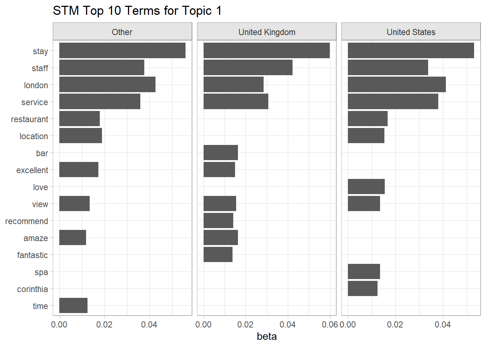

2.2 STM
STM incorporates arbitrary document metadata into the topic model. The goal of STM is to discover topics and estimate their relationship to the metadata. If how a topic is discussed depends on the metadata features, control for them in the topical content part of the model (the beta matrix). E.g., children and adults will discuss hotels differently. If what topics are discussed depends on the metadata features, control for them in the topical prevalence model (the gamma matrix). E.g., negative hotel reviews might focus on different topics than positive reviews.
Algorithm
STM is similar to LDA in that it assumes each document is created by a generative process where topics are included according to probabilities (topical prevalence) and words are included in the topics (topical content) according to probabilities. STM adds the possibility of including topical prevalence covariates, and topical content covariates.
Data Preparation
Chapter 1 prepped the data by correcting misspellings, lemmatizing words, and removing stop words
The stm package represents a text corpus as an object with three components: a sparse matrix of counts by document and vocabulary word vector index, the vocabulary word vector, and document metadata. I used STM for my Battle of the Bands project.
stm::textProcessor() is essentially a wrapper around the tm package. It produces a list object with three main components:
vocab, a named vocabulary vector, one element per distinct word.documents, a list of matrices, one per document. Each matrix has 2 rows of integers. The first row is indices from the vocabulary vector; the second is their associated word counts. This is a concise representation of a document term matrix. The processing step sometimes removes a few documents if they are empty after removing stopwords, numbers, est.meta, a metadata data frame, one row per document containing the feature cols.
The model fit took about 3 minutes to run. I ran it once then saved the result.
stm_processed <-
stm::textProcessor(
documents = hotel_prep$review_words,
metadata = hotel_prep %>% select(rating, property),
lowercase = FALSE,
removestopwords = FALSE,
removenumbers = FALSE,
removepunctuation = FALSE,
stem = FALSE
)
saveRDS(stm_processed, file = "input/stm_processed.RDS")After processing, prepare the corpus by removing infrequently used words. stm::prepDocuments() removes infrequently appearing words, and removes any documents that contain no words after processing and removing words. 1% (about 230) is a conservative threshold. The plot below shows that removing even a few words will remove some documents, but you can still retain most document

stm_prepared <-
stm::prepDocuments(
stm_processed$documents,
stm_processed$vocab,
stm_processed$meta,
lower.thresh = length(stm_processed$documents) * .01
)## Removing 26136 of 26886 terms (239369 of 943763 tokens) due to frequency
## Removing 21 Documents with No Words
## Your corpus now has 23352 documents, 750 terms and 704394 tokens.Fit
The stm package allows you to either specify the number of topics (K) to identify, or it can choose an optimal number by setting parameter K = 0. The resulting probability distribution of topic words (beta matrix) will be a K x rlength(stm_prepared$vocab)matrix. The probability distribution of topics (gamma matrix, theta in the stm package) will be a 23,352 x K matrix. I expect topics to correlate with the review rating, soratingis a prevalence covariate, and I expect word usage to correlate with the hotel, soproperty` is a topical content covariate.
set.seed(1234)
stm_fitted <- stm::stm(
stm_prepared$documents,
stm_prepared$vocab,
K = 4,
prevalence = ~ rating,
content = ~ property,
data = stm_prepared$meta,
init.type = "Spectral",
verbose = FALSE
)
saveRDS(stm_fitted, file = "input/stm_fitted.RDS")## A topic model with 4 topics, 23352 documents and a 750 word dictionary.## Topic Words:
## Topic 1: pleasure, home, hospitality, professional, outstanding, accommodation, impeccable
## Topic 2: park, min, shop, locate, ride, train, distance
## Topic 3: tea, lunch, wine, sweet, tasty, bread, delicious
## Topic 4: curtain, carpet, low, window, toilet, poor, mirror
##
## Covariate Words:
## Group 45 Park Lane: lane, cut, dorchester, deco, boutique, host, screen
## Group A To Z: cheap, continental, transport, owner, basic, toilet, cup
## Group Apex Wall: apex, district, bean, office, friday, city, balcony
## Group Bulgari: swim, pool, knightsbridge, italian, dark, massage, treatment
## Group City View: basic, cereal, fridge, cup, machine, roll, toilet
## Group Corinthia: corinthia, sauna, courtyard, flower, massage, rain, spa
## Group Dorchester: promenade, dorchester, grill, flower, famous, waiter, ritz
## Group Hartley: smell, budget, smoke, carpet, sink, chair, true
## Group Hotel Xenia: xenia, kensington, italian, twin, toiletry, balcony, spotlessly
## Group Lanesborough: butler, piano, magnificent, lounge, garden, spa, traditional
## Group London Guest House: continental, adequate, fridge, mile, clean, transport, budget
## Group Mandarin Oriental: mandarin, oriental, renovation, spa, renovate, pool, junior
## Group Marble Arch: executive, tasty, box, oxford, stair, sight, complain
## Group Mondrian: mondrian, river, paul's, container, sea, thames, rooftop
## Group Newham: girl, budget, bad, reasonable, corridor, furniture, buffet
## Group Rembrandt: rembrandt, jacuzzi, swim, club, museum, harrods, pool
## Group Rhodes: rhodes, paddington, jacuzzi, continental, fridge, stair, carry
## Group Ridgemount: ridgemount, owner, share, basic, bus, advice, budget
## Group Savoy: savoy, beaufort, thames, river, grill, american, deco
## Group Wellesley: butler, roll, deco, knightsbridge, terrace, boutique, lounge
##
## Topic-Covariate Interactions:
## Topic 1, Group 45 Park Lane: park, victoria, private, balcony, perfection, cut, interior
## Topic 1, Group A To Z: budget, clean, accommodation
## Topic 1, Group Apex Wall: wall, apex, court, district, taxi, pool, equip
## Topic 1, Group Bulgari: sauna, amp, treatment, spa, word, luxury, perfection
## Topic 1, Group City View:
## Topic 1, Group Corinthia: gym, spa, corinthia, wait, treatment, executive, mandarin
## Topic 1, Group Dorchester: theatre, christmas, talk, establishment, perfection, life, magnificent
## Topic 1, Group Hartley:
## Topic 1, Group Hotel Xenia: boutique, west, underground, xenia, clean, concierge, balcony
## Topic 1, Group Lanesborough: renovation, renovate, refurbish, easy, garden, greet, club
## Topic 1, Group London Guest House: house, guest, continental, safe, owner, breakfast, spotlessly
## Topic 1, Group Mandarin Oriental: oriental, classic, mandarin, complete, property, pool, type
## Topic 1, Group Marble Arch: gym
## Topic 1, Group Mondrian: balcony, view, lounge, roof, cool, lane, cocktail
## Topic 1, Group Newham: cheap, bad, money, family
## Topic 1, Group Rembrandt: attraction, west, theater, shop, nearby, tourist, theatre
## Topic 1, Group Rhodes: read, rhodes, convenient, host, owner, money, run
## Topic 1, Group Ridgemount: morning, fill, phone, bus, run, locate, basic
## Topic 1, Group Savoy: wed, junior, anniversary, surrounding, executive, view, history
## Topic 1, Group Wellesley: slipper, marble, roll, complimentary, touch, car, perfection
##
## Topic 2, Group 45 Park Lane: suite, butler, separate, dorchester, hyde, view, gym
## Topic 2, Group A To Z: towel, wifi, noise, main, train, toilet, line
## Topic 2, Group Apex Wall: moorgate, paul's, saturday, bank, surrounding, weekend, lunch
## Topic 2, Group Bulgari: harrods, black, marble, oriental, mandarin, boutique, brand
## Topic 2, Group City View:
## Topic 2, Group Corinthia: embankment, trafalgar, square, eye, thames, river, theater
## Topic 2, Group Dorchester: chair, executive, son, american, star, lane, spa
## Topic 2, Group Hartley: clean, free, breakfast
## Topic 2, Group Hotel Xenia: court, albert, natural, museum, history, victoria, hall
## Topic 2, Group Lanesborough: piano, beautifully, gym, corner, luxurious, hyde, excellent
## Topic 2, Group London Guest House: bus, budget, free, paddington, basic, line, stop
## Topic 2, Group Mandarin Oriental: knightsbridge, balcony, magnificent, harrods, hyde, overlook, interior
## Topic 2, Group Marble Arch: marble, oxford, street
## Topic 2, Group Mondrian: blackfriars, tate, bank, eye, bridge, south, promenade
## Topic 2, Group Newham: toast, bean, read, sausage, pay, cereal, iron
## Topic 2, Group Rembrandt: albert, kensington, victoria, south, natural, history, directly
## Topic 2, Group Rhodes: express, heathrow, money, internet, kensington, paddington, hyde
## Topic 2, Group Ridgemount: british, square, court, museum, trafalgar, theater, covent
## Topic 2, Group Savoy: pool, strand, embankment, covent, swim, sauna, christmas
## Topic 2, Group Wellesley: waiter, complimentary, harrods, hyde, junior, heat, corner
##
## Topic 3, Group 45 Park Lane: eye, son, amaze, guy, sunday, arrange, cocktail
## Topic 3, Group A To Z: toast, coffee, type, juice, amp, breakfast, tea
## Topic 3, Group Apex Wall: junior, suite, upgrade, towel, executive, card, bed
## Topic 3, Group Bulgari: website, classy, bad, expectation, toilet, scone, cut
## Topic 3, Group City View:
## Topic 3, Group Corinthia: promenade, chair, lounge, pianist, piano, music, wow
## Topic 3, Group Dorchester: pianist, piano, scone, afternoon, sandwich, surrounding, highly
## Topic 3, Group Hartley:
## Topic 3, Group Hotel Xenia: executive, continental, doorman, break, class, lounge, private
## Topic 3, Group Lanesborough: pianist, guess, scone, sandwich, afternoon, enter, type
## Topic 3, Group London Guest House: cereal, bean, toast, juice, coffee, fruit, plenty
## Topic 3, Group Mandarin Oriental: swim, treatment, pool, massage, spa, suite, club
## Topic 3, Group Marble Arch: menu
## Topic 3, Group Mondrian: spa, treatment, massage, share, world, window, concierge
## Topic 3, Group Newham: amp, egg, breakfast, bread, fruit, juice, tea
## Topic 3, Group Rembrandt: gym, spa, opposite, robe, chair, cereal, cold
## Topic 3, Group Rhodes: cereal, basic, toast, cheese, terrace, coffee, fruit
## Topic 3, Group Ridgemount: machine, internet, bacon, cereal, sausage, bean, free
## Topic 3, Group Savoy: pianist, piano, american, beaufort, scone, play, foyer
## Topic 3, Group Wellesley: feature, piano, pianist, music, play, italian, theatre
##
## Topic 4, Group 45 Park Lane: surrounding, host, wife, system, escort, executive, touch
## Topic 4, Group A To Z: break, smell, refurbish, carpet, fridge, fan, curtain
## Topic 4, Group Apex Wall: embankment, lounge, snack, robe, tea, iron, huge
## Topic 4, Group Bulgari: jacuzzi, breakfast, product, treatment, concierge, massage, bill
## Topic 4, Group City View: bad
## Topic 4, Group Corinthia: jacuzzi, perfection, swim, pool, chocolate, fruit, executive
## Topic 4, Group Dorchester: treatment, cup, escort, spa, airport, suit, wait
## Topic 4, Group Hartley: opposite, eye, read, door, bad, bed, carpet
## Topic 4, Group Hotel Xenia: classic, gym, tiny, pianist, stylish, large, terrace
## Topic 4, Group Lanesborough: amp, treatment, massage, butler, executive, junior, suite
## Topic 4, Group London Guest House: cheese, traffic, bank, single, twin, tiny, fit
## Topic 4, Group Mandarin Oriental: express, smoke, courtyard, tire, party, internet, star
## Topic 4, Group Marble Arch: upgrade, pay
## Topic 4, Group Mondrian: rumpus, play, grind, selection, cocktail, mini, superior
## Topic 4, Group Newham: block, flat, share, event, smell, carpet, partner
## Topic 4, Group Rembrandt: executive, gym, american, renovate, location, train, sauna
## Topic 4, Group Rhodes: elegant, build, single, street, interior, main, tiny
## Topic 4, Group Ridgemount: garden, street, traffic, single, face, stair, grind
## Topic 4, Group Savoy: butler, team, anniversary, club, treatment, attention, package
## Topic 4, Group Wellesley: gym, stun, oriental, smell, smoke, lobby, luxury
##